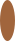
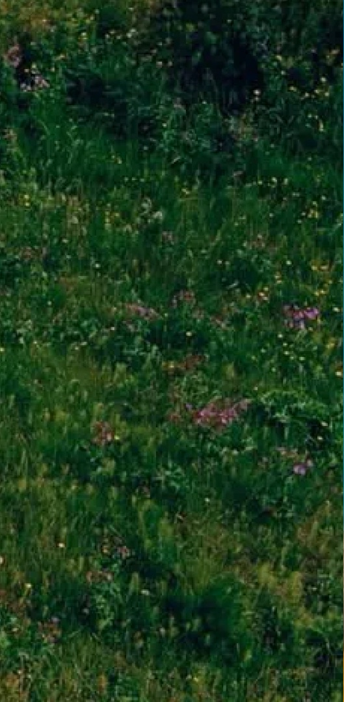
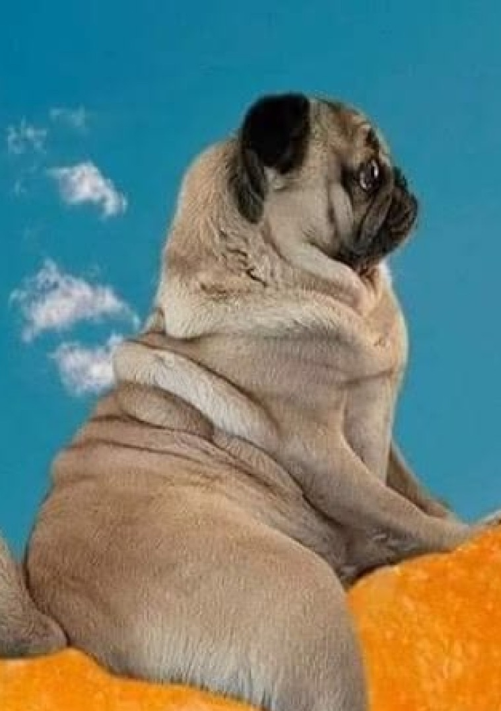

כולן מלאות וקפואות על מלא, כדי שתשווי את הערבוב עצמו. מה שהכי משפיע זה לא רק עוצמת הדחיפה אלא גודל המערבולות — תדר נמוך נותן מערבולות גדולות שרואים אותן נעות, תדר גבוה נותן רעש דק שנראה כמו טקסטורה ולא כמו תנועה.


